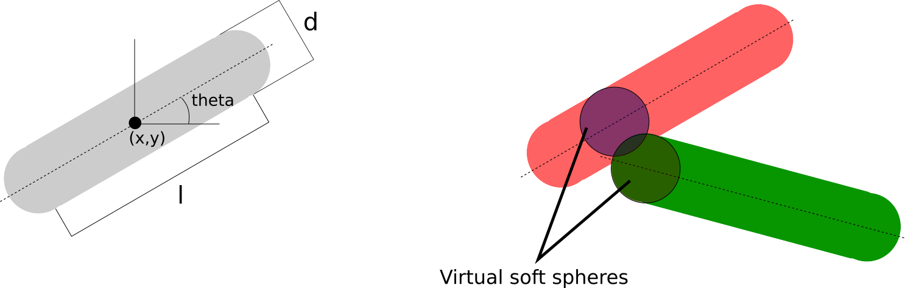

Models
Several models are already implemented in the CellBasedModels. You can use them by calling
CBMModels.NameOfModeland introduced in the Agent using the baseModelInit or baseModelEnd keyord arguments. e.g.
ABM(2,
baseModelInit=[CBMModels.Bacteria2D]
#More arguments...
)Soft spheres
| Model names |
|---|
CBMModel.softSpheres2D |
CBMModel.softSpheres3D |
| Parameter | Scope | Description |
|---|---|---|
| $b$ | GlobalFloat | Viscosity of the medium |
| $\mu$ | GLobalFloat | Relative distance of cell-cell repulsion |
| $f0$ | LocalFloat | Force of repulsion |
| $m$ | LocalFloat | Mass of the sphere |
| $r$ | LocalFloat | Radius of the sphere |
| $vx$, $vy$, $vz$ | LocalFloat | Velocity of sphere |
| $fx$, $fy$, $fz$ | LocalFloatInteraction | Force of repulsio interaction |
The cells are spheroids that behave under the following equations:
\[m_i\frac{dv_i}{dt} =-bv_i+\sum_j F_{ij}\]
\[\frac{dx_i}{dt} =v_i\]
where the force is
\[F_{ij}= \begin{cases} f0(\frac{r_{ij}}{d_{ij}}-1)(\frac{\mu r_{ij}}{d_{ij}}-1)\frac{(x_i-x_j)}{d_{ij}}\hspace{1cm}if\;d_{ij}<\mu r_{ij}\\ 0\hspace{5cm}otherwise \end{cases}\]
where $d_{ij}$ is the Euclidean distance and $r_{ij}$ is the sum of both radius.
Functions assotiated with the model
Rod-shape agent
| Model names |
|---|
CBMModels.rod2D |
| Parameter | Scope | Description | Normal values |
|---|---|---|---|
| $kn$ | GlobalFloat | Repulsion strength | 0.0001 |
| $\gamma n$ | GlobalFloat | Normal velocity friction constant | 1 |
| $\gamma t$ | GlobalFloat | Tangential velocity friction constant | 1 |
| $\mu cc$ | GlobalFloat | Friction coefficient rod-rod | .1 |
| $\beta$ | GlobalFloat | Friction constant | .5 |
| $\beta\omega$ | GlobalFloat | Angular friction constant | .1 |
| $vx$, $vy$ | LocalFloat | Velocity of rod | |
| $theta$ | LocalFloat | Angle of orientation of the rod | |
| $\omega$ | LocalFloat | Angular velocity of rod | |
| $d$ | LocalFloat | Width of rod | |
| $l$ | LocalFloat | Length of the rod | |
| $m$ | LocalFloat | Mass of the rod | |
| $fx$, $fy$ | LocalFloatInteraction | Repulsion force | |
| $W$ | LocalFloatInteraction | Angular momentum |
Model of physical interactions for bacteria modeled as 2D rod-shape like cells. This implementation follows the model of Volfson et al.
The forces that the rods feel are computed by the closest virtual spheres in contact. For a rod of mass $m$.
\[\bold{f}_{ij}=f_n\bold{n}_{ij}+f_t\bold{v}_t\]
where $\bold{n}_{ij}$ if the normal vector between between the center of the spheres, defined as $\bold{n}_{ij}=(\bold{r}_i-\bold{r}_j)/r_{ij}$; and the normal and tangential forces are defined as
\[\begin{aligned} f_n &= k_n\delta^{3/2}-\gamma_n \frac{m}{2}\delta v_n\\ f_t &= -\min(\gamma_t\frac{m}{2}\delta^{1/2},\mu_{cc}f_n) \end{aligned}\]
and $\delta=d-r_{ij}$, $v_n=\bold{v}_{ij}·\bold{n}_{ij}$ and $\bold{v}_t=\bold{v}_{ij}-v_n\bold{n}_{ij}$.
The equations of for a bacteria $i$ are given by
\[\begin{aligned} m\ddot{\bold{r}_i} &= \sum_s\bold{f}_{s}-\beta m \bold{v}\\ \bold{I}·\dot{\bold{\omega}}_i &= \sum_s(\bold{r}_s-\bold{r_i})\times\bold{f}_s - \beta_\omega\omega \end{aligned}\]
where $s$ denotes for the sum over the virtual interacting spheres acting on bacteria $i$ and $\bold{I}$ is the tensor of inertia of a cylinder.
Functions assotiated with the model
Here you may find functions that the defined model uses to compute it and can be used and modify it to make your own models.
CellBasedModels.CBMModels.rodForces — Functionfunction rodForces(
x,y,d,l,theta,vx,vy,m,
x2,y2,d2,l2,theta2,vx2,vy2,m2,
kn,γn,γt,μcc,μcw
)Function that return the forces in x and y and the torque force W for the rod model of Volfson et al..
x: x position of the rody: y position of the rodd: diameter of the rodtheta: angle of the rod in the planevx: velocity of the rod in the x coordinatesvy: velocity of the rod in the y coordinatesm: mass of the rod
The same for all the parameters with 2 for the other interacting rod. Constants are defined in the paper and in the Models section of the documentation.
Missing docstring for CBMMetrics.rodIntersection. Check Documenter's build log for details.